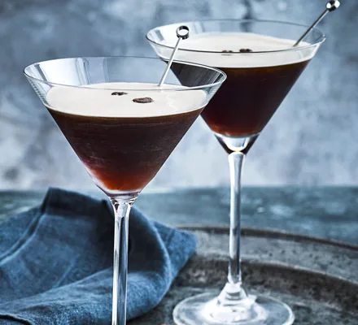

Espresso martini

Learn how to make this classic coffee cocktail.
Our easy recipe uses freshly brewed espresso, a dash of coffee liqueur and a simple sugar syrup.
The perfect drink for a hot summer day.
Ingredients
For the Sugar syrup:
For the cocktail:
- Ice
- 100ml vodka
- 50ml freshly brewed espresso coffee
- 50ml coffee liqueur (we used Kahlua)
- 4 coffee beans (optional)
How to make:
- Start by making the sugar syrup. Put the caster sugar in a small pan over a medium heat and pour in 50ml water. Stir, and bring to the boil.
- Turn off the heat and allow the mixture to cool. Put 2 martini glasses in the fridge to chill.
- Once the sugar syrup is cold, pour 1 tbsp into a cocktail shaker along with a handful of ice, the vodka, espresso and coffee liqueur. Shake until the outside of the cocktail shaker feels icy cold.
- Strain into the chilled glasses. Garnish each one with coffee beans if you like.